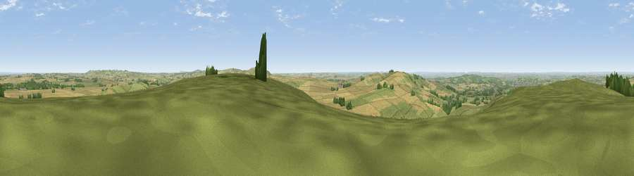

Viewpoint near Cherhill
#4685 in England · top 4% of its area beats it · near CherhillWhere it is
The exact computed spot (SU 05175 69038). Click the marker for map links.
The view, rendered

A 360° render of this exact spot computed from the terrain model, tree cover and land cover — summer colours, afternoon light, calibrated against photographs of famous viewpoints. Real trees, hedges and buildings will differ in detail.
The panorama
Grey silhouette: terrain skyline in each direction (720 bearings, Earth curvature and refraction included). Dashed green: skyline with trees (+15 m) and buildings (+8 m) as obstacles. Blue strip: how far the ground is visible on each bearing.
Where the view opens
Wedge length = distance to the farthest visible ground on that bearing (vegetation-aware). Rings at 10, 25 and 50 km.
What fills the view
46% grassland · 44% cropland · 9% woodland · 2% built-up
Angular shares of the visible panorama (visual magnitude), not map area. Landscape diversity 0.44 (0–1 Shannon).
Key numbers
More beautiful places nearby
The staircase of upgrades: each row has a higher view potential than everything closer. Driving times are estimates from straight-line distance, calibrated against real road routing — check an actual route before setting out.
| Place | Direction | Drive | Score |
|---|---|---|---|
| Viewpoint near Cherhill | SW · 3 km | ~7 min | 73.6 |
| Morgan's Hill | SW · 3 km | ~7 min | 74.3 |
| Viewpoint near Allington | SSE · 5 km | ~12 min | 75.6 |
| Martinsell viewpoint | ESE · 14 km | ~25 min | 77.3 |
| Viewpoint near Nympsfield | NW · 41 km | ~61 min | 77.5 |
| Viewpoint near Stinchcombe | NW · 43 km | ~63 min | 80.5 |
| Nottingham Hill | N · 60 km | ~82 min | 80.9 |
| Viewpoint near Bredon's Norton | N · 71 km | ~95 min | 81.3 |
51.42033, -1.92697 · source: screening · position refined by local search. Computed location — check access rights before visiting.